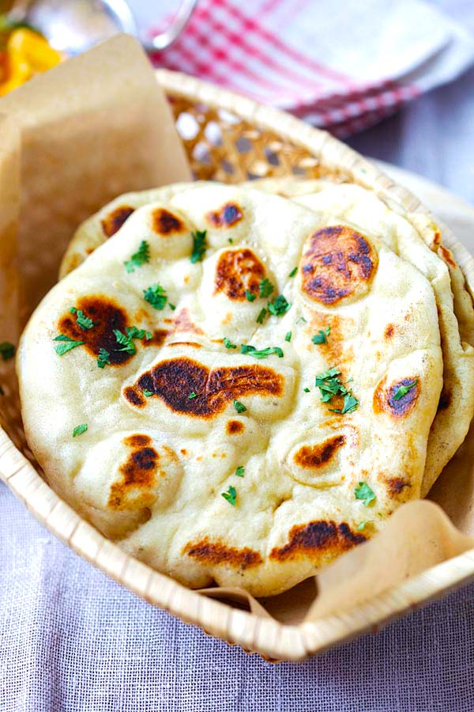

Naan Bread

Description
Naan is an Indian recipe; it's a type of flat bread.
Ingredients:
- 1(.25 ounce) package active dry yeast
- 1 cup warm water
- 1/4 cup white sugar
- 3 tablespoons milk
- 1 egg, beaten
- 2 teaspoons salt
- 4 1/2 cups bread flour
- 2 teaspoons minced garlic (Optional)
- 1/4 cup butter, melted
Directions:
- In a large bowl, dissolve yeast in warm water. Let stand
about 10 minutes, until frothy. Stir in sugar, milk, egg, salt, and
enough flour to make a soft dough. Knead for 6 to 8 minutes on a lightly
floured surface, or until smooth. place dough in a well oiled bowl, cover
with a damp cloth, and set aside to rise. Let it rise 1 hour, until
the dough has doubled in volume.
- Punch down dough, and knead in garlic. pinch off small handfuls of dough
about the size of a golf ball. Roll into balls, and place on a tray.
cover with a towel, and allow to rise until doubled in size, about 30 minutes.
- During the second rising, preheat grill to high heat.
- At grill side, rolle one ball of dough out into a thin circle. Lightly
oil grill. Place dough on grill, and cook for 2 to 3 minutes, or until
puffy and lightly browned. brush uncooked side with butter, and turn over.
Brush cooked side with butter, and cook until browned, another 2 to 4 minutes.
Remove from grill, and continue the process until all the naan has been prepared.